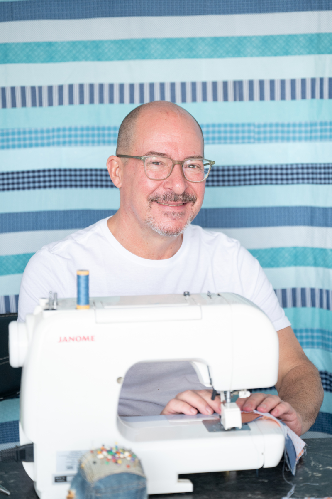

Handmade creations with memory and meaning
Quietly crafted to preserve your stories.
Mark creates pieces with a thoughtful approach to texture, color, and practical artistry.


About Mark
Patience, Memory, and Craftsmanship.
Mark is a quilt maker drawn to pieces that feel both deeply useful and quietly expressive. His work blends traditional quilt-making techniques with a modern editorial eye. At the center of his practice are craftsmanship, education, community engagement, and artistic integrity. Each quilt is made to be lived with, remembered, and passed on.
Mark’s sew-alongs are for makers who want a thoughtful pace, clear guidance, and a feeling of community. Expect seasonal projects, studio notes, and approachable instruction.
Read Mark's Story Join the Sew AlongOur Offerings
Beautifully useful. Purposefully stitched.
Contact
Tell me what you’re dreaming up.
Whether you’re interested in a custom quilt, a memory piece, or a future sew-along, I’d love to hear a little about what you have in mind.
You can also write directly at marksmagichands7@gmail.com